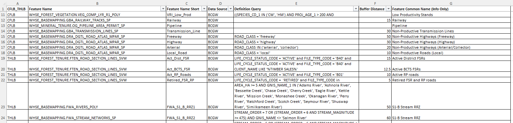
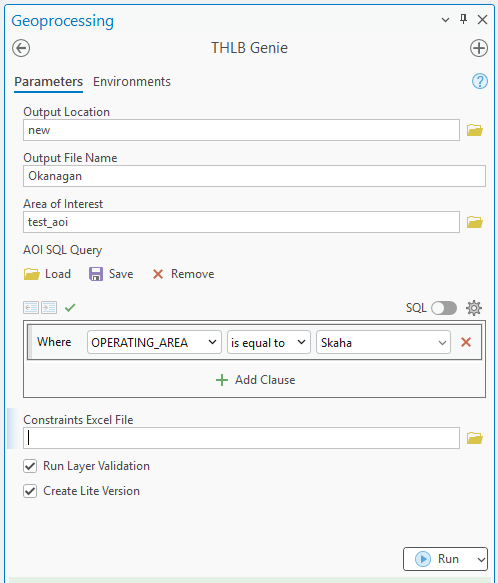
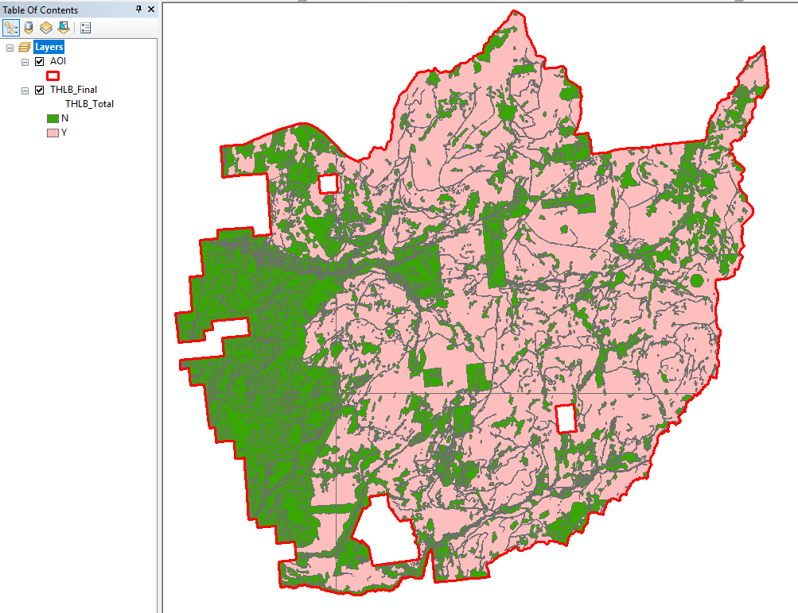

Gallery
Screenshots showcasing the tool interface and outputs

Constraints configuration spreadsheet

ArcGIS Pro toolbox parameters

THLB detailed constraint classification map

CFLB constraint classification map